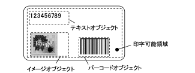
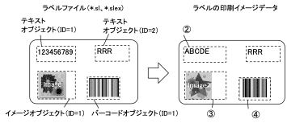

ラベル印字機能¶
ライブラリでは、SII Layout Editorで作成したラベルファイル(*.slex)の印字ができます。
また、ラベルファイルを利用し、テキスト、イメージ及びバーコードデータの置き換えを行い、印字できる機能を提供します。
SII Layout Editorはラベル作成ができるソフトウェアです。以降「アプリ」と称します。
アプリはストアで入手することが可能です。
アプリの入手¶
iOSまたはAndroid
QRコードをスマートフォンで読み取ってストアへ移動すると、アプリをインストールできます。
参考
・App Store、Google PlayまたはMicrosoft Storeに移動して、「SII Layout Editor」を検索、インストールすることも可能です。
ラベルファイルの構造¶
ラベルファイルは、ラベルの印字可能領域内にオブジェクトを配置したファイルです。

ラベルファイル (*.slex)の例
(1) ラベルファイルをライブラリで印字する際の注意点
アプリを使用したラベルファイルの印字とライブラリを使用したラベルファイルの印字では印字結果が異なる場合がありますので、実機にて事前に確認してください。
ライブラリを使用してラベルファイルを印字する際は、下記の点にご注意ください。
- 全てのオブジェクト
- 印字可能領域外に配置されたオブジェクトの描画はサポートしていません。
- テキストオブジェクト
- 「連続番号」はサポートしていません。
- アプリと同一のフォントを利用する場合はXcodeプロジェクトにカスタムフォントを追加してください。カスタムフォントがない場合、テキストデータはシステム標準のフォントで印字します。
- イメージオブジェクト
- ディザリングの設定が「バークス」または「ベイヤー」の場合、ライブラリでは「フロイド・スタンバーグ」となります。
- バーコードオブジェクト
- アプリでサポートするバーコードのうち、ライブラリでは下記のバーコードをサポートしています。
- CODE39
- CODE128
- UPC-A
- EAN13
- CODABAR
- UPC-E
- EAN8
- PDF417
- Data Matrix
- QRコード
- 「連続番号」はサポートしていません。
- バー幅の比率設定は反映しません。
- アプリで生成されるバーコードイメージとライブラリで生成するバーコードイメージは同一バーコードイメージにはならない場合があります。
- アプリでバーコードオブジェクトの高さをバー高さより小さく指定した場合、ライブラリではバーコードはオブジェクト内に収まるように縮小して印字します。
- アプリでPDF417の「セキュリティ」を-1に設定した場合、ライブラリではセキュリティレベルを0固定で描画します。
- アプリと同一のフォントを利用する場合はXcodeプロジェクトにカスタムフォントを追加してください。カスタムフォントがない場合、テキストデータはシステム標準のフォントで印字します。
- アプリでサポートするバーコードのうち、ライブラリでは下記のバーコードをサポートしています。
- 図オブジェクト
- 「線の太さ」が細い場合、破線・長破線・二重線の印字が潰れる可能性があります。
- アプリとライブラリでの図オブジェクトの描画位置が異なる場合があります。
- 連絡帳オブジェクト
- アプリと同一のフォントを利用する場合はXcodeプロジェクトにカスタムフォントを追加してください。カスタムフォントがない場合、テキストデータはシステム標準のフォントで印字します。
- 日付と時刻オブジェクト
- アプリと同一のフォントを利用する場合はXcodeプロジェクトにカスタムフォントを追加してください。カスタムフォントがない場合、テキストデータはシステム標準のフォントで印字します。
- アプリと同一のフォントを利用する場合はXcodeプロジェクトにカスタムフォントを追加してください。カスタムフォントがない場合、テキストデータはシステム標準のフォントで印字します。
ラベルファイルの利用手順¶
ラベルファイルを利用した印字手順を下記に示します。
(1) ラベルファイルをそのままライブラリから印字する場合
- 印字命令例
- ① ラベルファイルの指定
- ② ラベルの印字
(2) ラベルファイルのオブジェクトデータを置換して印字する場合
- 印字命令例
- ① ラベルファイルの指定
- ② ラベルのテキストデータの置換 (テキストオブジェクト ID=1)
- ③ ラベルのイメージデータの置換 (イメージオブジェクト ID=1)
- ④ ラベルのバーコードデータの置換 (バーコードオブジェクト ID=1)
- ⑤ ラベルの印字
